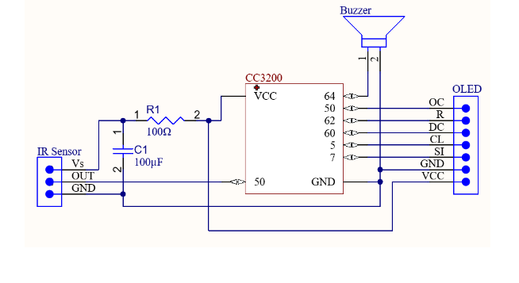
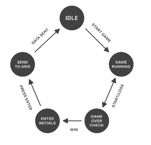
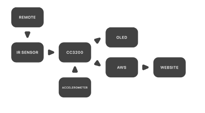

Brick Breaker is an embedded implementation of the classic Breakout game
built on the CC3200 microcontroller. The system integrates real-time
gameplay, hardware input, and cloud connectivity into a complete
arcade-style experience.
Key Features
Accelerometer-controlled paddle movement
OLED rendering of game state
Brick durability system with color-based HP
Power-ups (extra ball, slow-down, sudden death)
Score tracking, lives, and level progression
IR remote initials input
AWS-backed leaderboard
What I Learned
This project reinforced how hardware, real-time input, and cloud services
can be combined into a complete system. It strengthened my understanding
of embedded design, event-driven programming, and system integration.
Development Process
This project was built on top of a sequence of embedded systems labs that
introduced core hardware and software concepts, which were later integrated
into the final system.
Lab 1: Introduced the CC3200 board and development
environment, establishing familiarity with the hardware.
Lab 2: Integrated the OLED display using SPI and built
rendering logic. As an extension, I developed a Snake game to explore
real-time graphics and input handling.
Lab 3: Added IR sensor input, enabling communication
between a remote control and the board.
Lab 4: Implemented interrupt-driven input handling for the
IR remote and introduced HTTP POST/GET communication using AWS Lambda,
enabling cloud-based data transfer.
These foundational components were integrated into the final system,
combining hardware interfaces, real-time input handling, and cloud
communication into a cohesive embedded application.
System Design
The system integrates hardware components, gameplay logic, and cloud
services. The diagrams below illustrate the wiring, game flow, and
overall architecture.
Hardware Wiring

CC3200 connected to IR sensor, OLED display, and buzzer.
Game State Flow

Idle → Game → Game Over → Initials → Upload → Restart.
System Architecture

Hardware inputs feed into gameplay logic and AWS services to power
the leaderboard.
Gameplay Logic
The game tracks ball position, paddle movement, and brick states.
Collisions are computed using bounding logic, and bricks are stored
as structured objects with HP and state.
Cloud Integration
After game over, player initials are entered via IR remote and sent
to AWS using HTTP POST. Data is stored in DynamoDB and retrieved to
display a leaderboard.
Demo
This demo showcases gameplay, accelerometer-based paddle control,
power-ups, and leaderboard integration.
Debugging unexpected “ghost balls” and tuning PWM frequencies for audio
were key challenges. Integrating AWS services and configuring permissions
and CORS for leaderboard access also required careful debugging.
Notes
Repository kept private due to collaboration constraints and sensitive deployment configuration.
Code snippets and implementation details are available upon request.
This project was primarily designed and implemented independently, with a
separate web interface developed collaboratively to display final results.
Documentation includes a full user guide and requirements appendix.